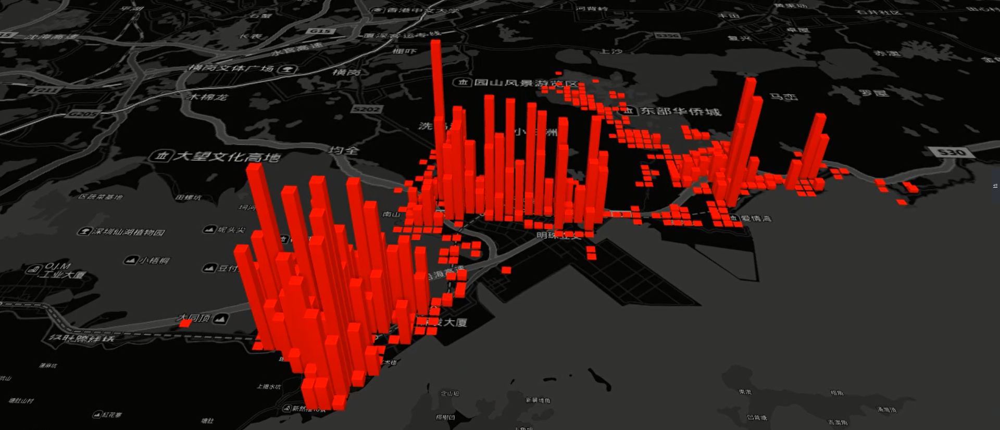
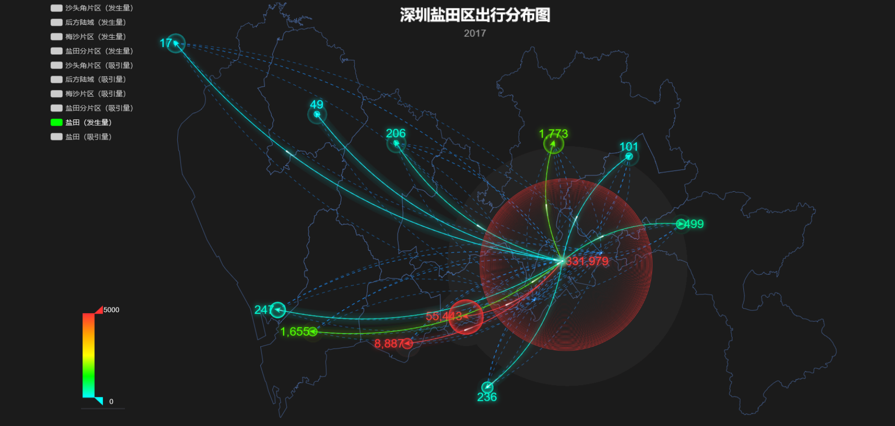
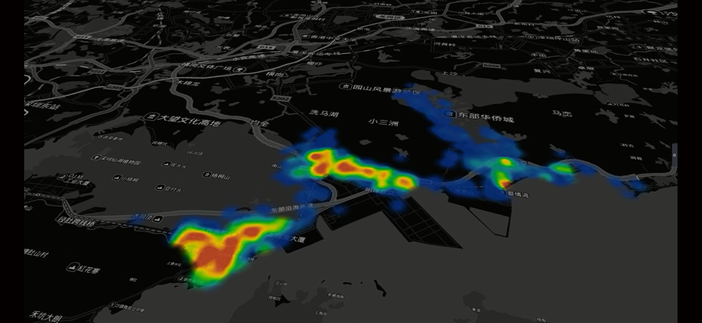

Trip Generation and Attraction (交通发生量与吸引量分析)
交通调查是公路建设项目可行性研究的重要环节;其目的是为了了解项目所在地区公路交通量的特性和构成，掌握公路交通流量、流向及车辆构成等数据资料，为未来拟建公路交通量预测提供基础数据,同时也为经济评价和公路设计提供可靠的依据。。
Detection of Traffic Volume from Aerial Video (车流量无人机视频监测)

交通调查是公路建设项目可行性研究的重要环节;其目的是为了了解项目所在地区公路交通量的特性和构成，掌握公路交通流量、流向及车辆构成等数据资料，为未来拟建公路交通量预测提供基础数据,同时也为经济评价和公路设计提供可靠的依据。。
OD Estimation Based on Traffic OD Survey(传统OD估计)
通勤出行是城市居民最重要和最基本的日常出行，也是城市交通系统最大的压力来源。随着城市经济发展和人口规模增加，城市居民就业范围不断扩大，通勤距离也随之变化。研究城市居民通勤距离可以反映出居民出行规律和城市交通现状，为城市经济发展、交通规划提供客观依据。目前关于城市居民通勤距离的研究主要基于问卷调查等传统的人工方式，而基于手机定位技术的社交网络数据为大数据时代的城市研究提供了更为省时省力的数据来源。。
OD Estimation Based on Multi-source Big Data(大数据OD估计)

通勤出行是城市居民最重要和最基本的日常出行，也是城市交通系统最大的压力来源。随着城市经济发展和人口规模增加，城市居民就业范围不断扩大，通勤距离也随之变化。研究城市居民通勤距离可以反映出居民出行规律和城市交通现状，为城市经济发展、交通规划提供客观依据。目前关于城市居民通勤距离的研究主要基于问卷调查等传统的人工方式，而基于手机定位技术的社交网络数据为大数据时代的城市研究提供了更为省时省力的数据来源。。
Hotspot (出行热点)
。
Location analysis of Public Facilities (轨道站点设置)

根据居民的时空轨迹点数据，基于地图匹配和轨迹还原技术，还原出行时空轨迹，探测用户的起讫点，结合建筑物和人口等数据，研究轨道站点的服务范围及服务人群，对轨道辐射理论进行论证。
Research On Low-carbon City (低碳城市研究)

基于智能交通系统（ITS），利用浮动车、线圈、视频等采集实时交通参数，对多源交通信息进行融合，结合城市城市道路拓扑网、地形、气象、机动车技术参数信息，集成微观机动车CO2尾气排放模型，以城市道路路段为基本单元，以时间序列为轴，建立“路段-道路-区域-整个城市”一体的城市道路交通CO2排放时空分布模型。该模型可以对不同时间和空间尺度内的城市道路CO2排放规模进行实时在线估算。。